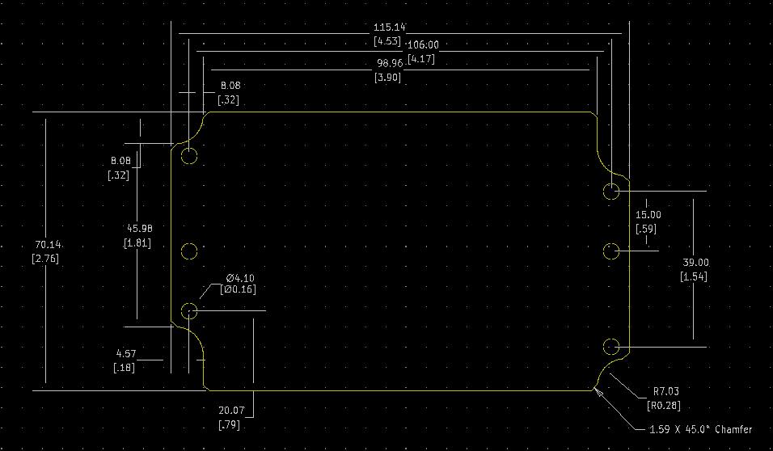

Project template containing the recommended board layout for Hammond Manufacturing 1550Z107:
Black: 1550Z108BK - HM189-ND
Unpainted: 1550Z108 - HM188-ND
Black: 1550Z107BK - HM201-ND
Unpainted: 1550Z107 - HM200-ND
Features:
- Very economical - thick wall - diecast aluminum - watertight electronic instrument enclosure.
- Rugged, diecast aluminum alloy (tough - yet easy to machine),
- Two piece “tongue & groove” construction for protection against access of dust and water.
- Ideal for repetitive opening and closing.
- Easy wall-mounting
- Unpainted version is vibra finished for a smooth surface with no sharp edges.
- Textured black version is coated with tough polyester powder for a lasting finish, even after machining. Finish is applied to the entire enclosure (inside & out).
- Lid secured with stainless steel, Philips head, counter sunk, machine screws - into factory tapped holes.
- Lid screws are outside the gasket protection area to eliminate the need for “O” rings on the screws.
- Designed to meet IP66 (NEMA 1, 4, 4X, 12 & 13 ratings. Gasket is pre-formed, one-piece silicone rubber and installs easily into lid groove.
- North American Mark of Safety - cUL & UL listed. Certified to NEMA 4X standards - File #E71073
The "Dwgs.User" layer contains all critical dimmensions in milimeters[inches].
The "Edge.Cuts" layer contains the maximum board outline and holes to align with board standoffs.
PCB Preview:
